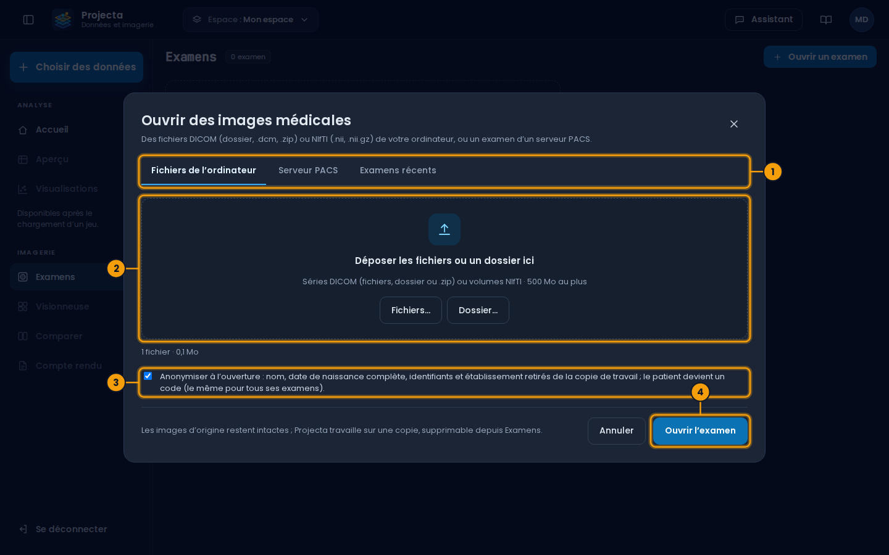
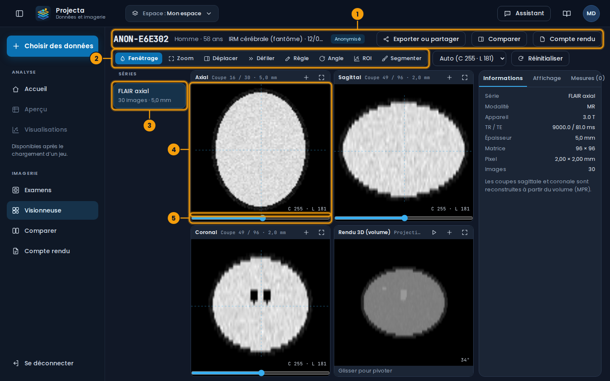
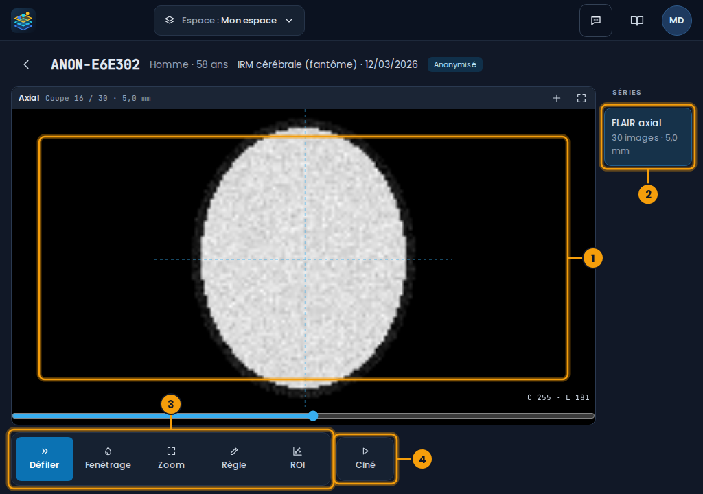
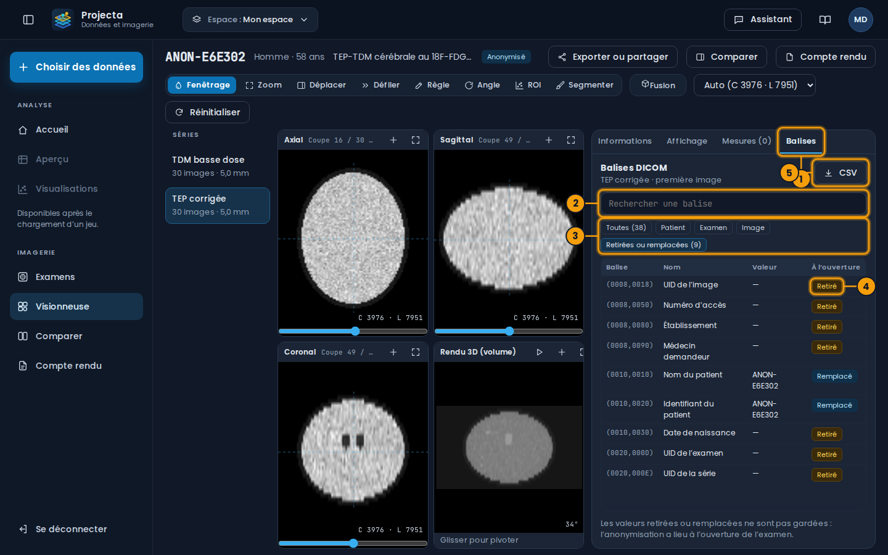
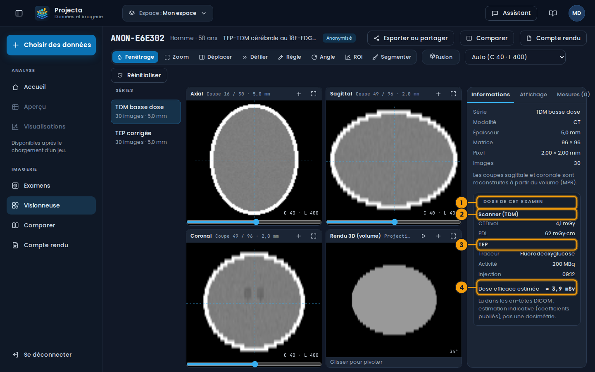
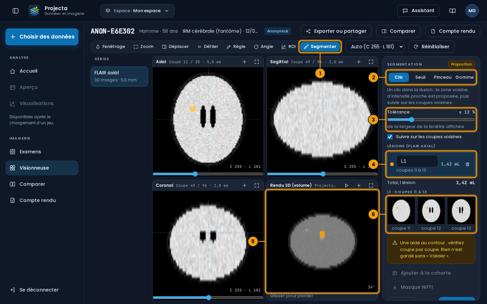
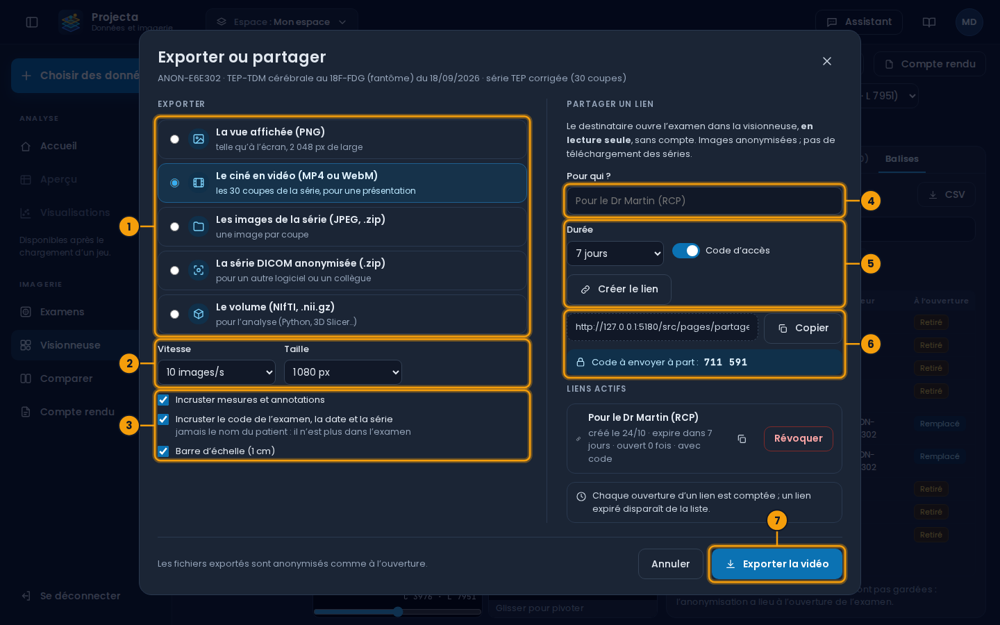
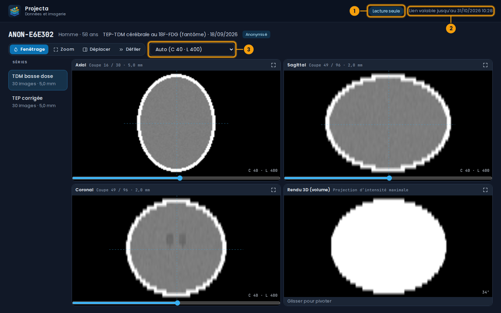

Imagerie médicale¶
La partie IMAGERIE du menu latéral ouvre des examens DICOM ou NIfTI (IRM, scanner…), les montre en trois plans et en 3D, mesure les lésions, suit leur évolution d’un examen à l’autre et prépare un compte rendu.
Une aide, pas un diagnostic
Projecta aide à la lecture et à la mesure. Le diagnostic et le compte rendu restent ceux du médecin, qui les valide. Projecta n’est pas un dispositif médical certifié.
Essayer sans données de patient¶
L’administrateur peut fournir deux IRM de synthèse d’un patient fictif, à six mois d’écart (une lésion grossit, une est stable, une est nouvelle), et une TEP-TDM cérébrale au FDG du même patient (pour la dose et les balises) : aucune donnée réelle, de quoi essayer chaque écran.
Ouvrir un examen¶

- Fichiers de l’ordinateur, Serveur PACS ou Examens récents.
- Déposer les fichiers ou un dossier (DICOM, NIfTI,
.zip). - Anonymiser à l’ouverture (cochée par défaut).
- Ouvrir l’examen.
Imagerie › Examens › Ouvrir un examen, trois onglets :
| Onglet | Contenu |
|---|---|
| Fichiers de l’ordinateur | des fichiers DICOM (avec ou sans extension .dcm), un dossier entier, des .zip, ou des volumes NIfTI (.nii, .nii.gz) ; 500 Mo au plus ensemble |
| Serveur PACS | un PACS joignable en DICOMweb (Orthanc, dcm4chee…) : rechercher par patient, dates et modalité, choisir l’examen puis ses séries |
| Examens récents | les examens déjà ouverts |
Anonymiser à l’ouverture (coché par défaut) : le nom, la date de
naissance complète, les identifiants et l’établissement sont retirés de la
copie de travail. Le patient devient un code (ANON-3F2A1C), le même
pour tous ses examens, ce qui permet de les comparer sans savoir de qui
il s’agit. Le code est calculé avec un secret du serveur : sans lui, on
ne peut pas retrouver l’identifiant.
Les images d’origine ne changent pas : Projecta travaille sur une copie, visible du seul utilisateur qui l’a ouverte, et supprimable depuis Examens.
PACS du réseau de l’hôpital
Un PACS du réseau interne doit être autorisé par l’administrateur (comme les serveurs distants). Le mot de passe ou le jeton du PACS n’est pas enregistré ; l’adresse l’est, dans l’espace de travail.
Visionneuse¶

- L’examen : son code anonymisé, sa date ; Exporter ou partager, Comparer, Compte rendu.
- Les outils : fenêtrage, zoom, règle, angle, ROI, Segmenter…
- Les séries de l’examen.
- La coupe axiale ; les coupes sagittale et coronale à côté, le rendu 3D en bas.
-
Le curseur des coupes.
-
Séries à gauche ; au centre, les coupes axiale, sagittale et coronale (reconstruites à partir du volume : MPR) et un rendu 3D (projection d’intensité maximale, à faire pivoter en glissant).
- Un clic place le réticule : les deux autres plans montrent les coupes qui passent par ce point. La molette, le curseur sous chaque vue ou les flèches du clavier font défiler les coupes.
- Outils : Fenêtrage (glisser : horizontalement la largeur, verticalement le centre), Zoom, Déplacer, Défiler, Règle (glisser d’un point à l’autre), Angle (trois clics), ROI.
- Fenêtres préréglées : « Auto » (celle de l’examen ; en TEP, de zéro aux voxels les plus fixants), et pour le scanner : cerveau, parties molles, poumon, os.
- Le bouton + d’une vue l’ajoute aux images clés du compte rendu ; le bouton d’agrandissement la montre seule.
Projections et fusion TEP/TDM¶
L’onglet Affichage du panneau de droite règle la façon de voir les plans :
- Projection : Coupe (une coupe), MIP (la valeur la plus forte sur l’épaisseur : foyers TEP, vaisseaux injectés), MinIP (la plus faible : bronches, emphysème) ou Moyenne (lisse le bruit), sur une épaisseur de 5 à 100 mm ou sur tout le volume.
- Fusion TEP / TDM (aussi le bouton Fusion de la barre d’outils, pour un examen qui a une TEP et une TDM) : la TEP en couleurs sur la TDM, son opacité, ses couleurs (chaud, arc-en-ciel, gris) et sa fenêtre. Les deux séries d’un même examen sont alignées par leurs coordonnées DICOM. Le rendu 3D montre alors la MIP de la TEP en gris inversé ; ▶ la fait tourner.
- Sous la croix : la valeur de la TDM (HU) et celle de la TEP, en SUV quand la série donne son unité (Bq/mL), le poids du patient et la dose injectée ; avec le SUVmax et le SUVmoy d’une sphère de 1 cm.
Sur tablette¶
Sur une tablette (en paysage) ou une fenêtre étroite, la visionneuse montre une seule grande vue, pour relire un examen au lit du patient ou en réunion : le même tableau de bord, dans le navigateur, rien à installer.

- La grande vue (axiale ; le bouton d’agrandissement montre les quatre vues).
- Les séries, à droite.
- Les outils, en boutons de 64 px : Défiler, Fenêtrage, Zoom, Règle, ROI.
- Ciné : les coupes défilent seules ; un second appui les arrête.
| Geste | Effet |
|---|---|
| Glisser un doigt (Défiler) | les coupes défilent |
| Appui long, puis glisser | le fenêtrage (glisser à droite : plus large ; vers le haut : plus clair) |
| Deux doigts | zoom (écarter, rapprocher) et déplacement |
| Toucher | le réticule va là |
Avec un autre outil choisi, le doigt fait ce que fait l’outil (fenêtrage, zoom, règle, ROI). La flèche en haut à gauche revient aux examens. La segmentation, l’export, le partage et le compte rendu restent sur ordinateur.
15 minutes
Sur tablette, la session se ferme après 15 minutes sans toucher l’écran : une tablette se prête facilement. Reconnectez-vous pour reprendre.
Balises DICOM et dose¶

- L’onglet Balises du panneau de droite, qui s’élargit.
- Rechercher une balise : par numéro, nom ou valeur.
- Les filtres : Toutes, Patient, Examen, Image, Retirées ou remplacées.
- La colonne À l’ouverture : ce que l’anonymisation a fait de la balise.
- CSV : la liste complète, à joindre à une demande ou à comparer.
L’onglet Balises liste toutes les balises publiques de la première
image de la série (les balises privées des constructeurs et les pixels ne
sont pas gardés). Celles d’une séquence suivent la séquence, marquées
›.
| À l’ouverture | Sens |
|---|---|
| Gardé | la valeur du fichier |
| Remplacé | le nom et l’identifiant du patient, remplacés par son code |
| Retiré | une donnée d’identité (date de naissance, établissement, médecins, numéro d’accès, UID…) : sa valeur n’a pas été gardée |
Un examen ouvert sans anonymisation garde toutes ses valeurs. Les examens ouverts avant cette version montrent seulement le résumé des réglages : ouvrez de nouveau les fichiers pour voir toutes les balises.

- Dose de cet examen, en bas de l’onglet Informations.
- Le scanner : CTDIvol et PDL.
- La TEP : traceur, activité, heure d’injection.
- La dose efficace estimée de l’examen.
Dose de cet examen (onglet Informations), quand les en-têtes la donnent :
- scanner : le CTDIvol moyen des coupes et le PDL (produit dose·longueur : CTDIvol × longueur couverte) ;
- TEP ou scintigraphie : le traceur, l’activité injectée (MBq) et l’heure d’injection ;
- dose efficace estimée (mSv) : PDL × un coefficient de la région examinée (tête 0,0021 ; cou 0,0059 ; thorax 0,014 ; abdomen et pelvis 0,015), plus, pour le FDG, 0,019 mSv par MBq ;
- Suivi · ce patient, 12 mois : ses examens des douze mois précédents ouverts dans Projecta, et leur cumul.
Une estimation
La dose efficace est une estimation d’adulte à partir de coefficients publiés, pas une dosimétrie du patient. Quand un examen a plusieurs séries de scanner (reconstructions), celle au plus fort PDL est comptée une fois. Les autres traceurs que le FDG n’ont pas d’estimation.
Mesures et analyse¶
Une ROI est une ellipse tracée autour d’une lésion. La vue zoome sur la partie tracée pour la regarder de près (un clic sur le nom de la ROI, dans Mesures, y revient ; Réinitialiser remontre toute l’image). En tête de Mesures, la galerie Régions montre chaque région tracée sur la série, avec son volume ; elle se complète à chaque nouvelle ROI, et un clic sur une vignette y revient. L’API calcule :
- sur la coupe : surface, moyenne ± écart-type, minimum et maximum ;
- la lésion : les voxels plus brillants que la moitié entre le pic de l’ellipse et le tissu à son bord (contour « à mi-hauteur »), reliés au pic, sur la coupe et les coupes voisines ; son volume et le nombre de coupes qu’elle occupe ;
- 18 caractéristiques radiomiques : forme (volume, surface, sphéricité, allongement, plus grand diamètre), intensité (moyenne, écart-type, médiane, 10ᵉ et 90ᵉ centiles, asymétrie, aplatissement, entropie, uniformité), texture (contraste, homogénéité, corrélation et énergie de la matrice de cooccurrence).
Le contour à mi-hauteur convient aux lésions nettement plus claires que le tissu voisin (hypersignaux FLAIR, prise de contraste). Pour une lésion sombre ou mal limitée, vérifiez le volume.
Les mesures sont enregistrées avec l’examen. Mesures en CSV les télécharge.
Ajouter à la cohorte ajoute la lésion, une ligne par lésion, à un jeu
de données (imagerie/cohortes/<nom>.csv du dossier des jeux) : code du
patient, date de l’examen, série, nom de la lésion, sexe, âge et les 18
caractéristiques. Une fois chargée, la cohorte se projette comme n’importe
quel jeu (PCA, t-SNE, UMAP) : les lésions qui se ressemblent se
regroupent.
Segmenter les lésions¶
L’outil Segmenter propose le contour des lésions, en 3D ; vous le corrigez, puis vous le validez.

- L’outil Segmenter : le panneau de droite devient celui de la segmentation.
- La façon de segmenter : Clic, Seuil, Pinceau, Gomme.
- Son réglage : la tolérance (Clic), le seuil (Seuil) ou le rayon du pinceau.
- Les lésions : nom, coupes, volume (mL). Un clic choisit une lésion (son nom se modifie) ; la corbeille la retire.
- Le rendu 3D montre les lésions en couleur.
- Les coupes de la lésion choisie : un clic y va.
| Façon | Ce qu’elle fait |
|---|---|
| Clic | un clic dans la lésion : les voxels reliés dont la valeur est proche (± la tolérance, une part de la largeur de la fenêtre affichée) sont proposés, sur la coupe ou, avec Suivre sur les coupes voisines, en 3D |
| Seuil | pareil, avec les voxels au-dessus d’une valeur |
| Pinceau | glisser sur une coupe ajoute un disque à la lésion choisie (une nouvelle s’il n’y en a pas) |
| Gomme | glisser retire de la lésion choisie (de toutes, sans lésion choisie) |
Une proposition qui couvrirait plus de 5 % du volume est refusée : la tolérance déborde sur le tissu voisin ; baissez-la, ou montez le seuil.
Valider garde les lésions avec l’examen, avec leur volume et les 18 caractéristiques radiomiques (comme une ROI) ; Annuler revient aux lésions validées. Une fois validées :
- Ajouter à la cohorte : une ligne par lésion dans le jeu de la cohorte (voir Mesures et analyse) ;
- Masque NIfTI : un fichier
.nii.gzoù chaque lésion a son numéro (1, 2, 3…), aligné avec l’export du volume : pour 3D Slicer, ITK-SNAP ou Python.
Une aide au contour
La proposition suit les valeurs de l’image, pas l’anatomie : vérifiez chaque coupe, corrigez au pinceau et à la gomme. Rien n’est gardé sans Valider.
Comparer deux examens¶
Comparer montre la même série de deux examens du même patient, côte à côte :
- Défilement lié : les deux vues défilent ensemble ;
- Recalage automatique : les coupes sont appariées par la position de la tête (le centre du patient dans chaque volume), ce qui compense un patient placé plus haut ou plus bas. Ce n’est pas un recalage complet (rotation, déformation) ;
- Évolution des lésions : les ROI de même nom dans les deux examens,
avec leur volume et l’écart (
+12 %,nouvelle,disparue), et le graphique du volume de chaque lésion au fil de tous les examens.
Pour suivre une lésion, donnez-lui le même nom dans chaque examen (champ « Lésion » de la mesure).
Compte rendu¶
Un brouillon est prérempli : indication, technique (séquences, champ), résultats (chaque lésion et son évolution par rapport à l’examen précédent), conclusion à écrire. Les images clés et les mesures sont jointes.
- Enregistrer le brouillon ;
- Exporter en PDF : la fenêtre d’impression du navigateur, le compte rendu seul ;
- Valider : il faut une conclusion et une signature ; le compte rendu n’est plus modifiable, sauf à Rouvrir le brouillon.
L’envoi au PACS (DICOM SR) est prévu pour une prochaine version.
Exporter ou partager¶
Exporter ou partager (en haut de la visionneuse) :

- Le format de l’export.
- Pour la vidéo : la vitesse et la taille des images.
- Ce qui est incrusté dans les images.
- Pour qui ? : un nom, pour vous retrouver dans vos liens.
- La durée du lien, le code d’accès, puis Créer le lien.
- Le lien à copier, et le code à envoyer à part (un autre message).
- Le bouton d’export, selon le format choisi.
| Export | Contenu |
|---|---|
| La vue affichée (PNG) | la vue agrandie (sinon l’axiale), à la coupe et avec la fenêtre de l’écran, 2 048 px de large |
| Le ciné en vidéo | toutes les coupes de ce plan, à 5, 10 ou 20 images par seconde ; MP4, ou WebM si le navigateur ne sait pas écrire de MP4 |
Les images de la série (JPEG, .zip) |
une image par coupe |
La série DICOM anonymisée (.zip) |
des images DICOM écrites de nouveau, pour un autre logiciel ou un collègue |
Le volume (NIfTI, .nii.gz) |
pour l’analyse (Python, 3D Slicer…) |
Les exports reprennent ce que l’examen a gardé à son ouverture : un examen anonymisé reste anonymisé (le code du patient, jamais son nom). Les incrustations (mesures, code de l’examen, date et série, barre d’échelle de 1 cm) se cochent pour les images et la vidéo.
Partager un lien : la personne qui le reçoit ouvre l’examen dans une visionneuse en lecture seule, sans compte (fenêtrage, zoom, déplacement, défilement ; ni mesure, ni téléchargement) :

- Lecture seule.
- La date de fin du lien.
-
Les outils de lecture et la fenêtre.
-
Durée : 24 heures, 7 jours ou 30 jours. Un lien expiré n’ouvre plus rien et disparaît de la liste.
- Code d’accès (conseillé) : 6 chiffres, montrés une seule fois, à envoyer par un autre moyen que le lien. Après 10 codes erronés, le lien est bloqué.
- Liens actifs : pour qui, date de fin, nombre d’ouvertures. Révoquer coupe le lien tout de suite.
- Seul un examen anonymisé peut être partagé. Supprimer l’examen coupe aussi ses liens.
Un lien est une clé
Qui a le lien (et son code) voit l’examen jusqu’à sa date de fin. Préférez le code d’accès, la durée la plus courte utile, et révoquez un lien qui n’a plus d’usage.
Formats lus¶
| Format | Remarques |
|---|---|
| DICOM | une image par fichier (les fichiers multi-frame ne sont pas encore lus), triées par position ; séries regroupées par SeriesInstanceUID, examens par StudyInstanceUID |
| NIfTI-1 | .nii ou .nii.gz ; un volume 4D montre son premier volume |
Les volumes sont réorientés pour la lecture radiologique (le côté droit du patient à gauche de l’écran, l’avant en haut). Au-delà de 48 millions de voxels, la résolution dans le plan est réduite de moitié.